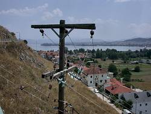

Caves With a View
|  |
| Image: a view from the exit of Perama Cave on Lake Ioannina. The hill to the left is Mt. Goritza, where the cave is located, the village in front is Perama. The city on the far shore of the lake is Ioannina. |
{kind=link}
This sounds a bit strange: a cave is underground, so how can it have a view?
The answer is easy: the cave entrance may provide a view. Some caves are located in a beautiful area and allow a special view from their entrance.
Sometimes even the entrance hall is impressive and it provides an additional element to the view: the border or frame of the . A landscape always looks better with a frame. If you don't believe me, go to a nice landscape and compare the view with and without the frame of a window.
 Kolbinger Höhle, Germany.
Kolbinger Höhle, Germany.
The cave is located on a rock overlooking the romantic Danube valley near Fridingen. Here is the begining of one of the Danube gorges, where the river cuts through the Swabian Jura.- Eisriesenwelt, Austria.
The cave entrance is located in the middle of a steep rock face, high on a moutain. After leaving the cable car station you have to walk to the cave entrance, and the view down into the valley around Werfen is impressive.  Dachsteinhöhlen, Austria.
Dachsteinhöhlen, Austria.
The Dachstein Cable Car brings visitors up to the Schönberg Alp (1418 m asl), a short walk brings you to each of the caves. Both cave entrances have an impressive view. Frauenmauerhöhle, Austria.
Frauenmauerhöhle, Austria.
You know, the Alps again.- Spannagelhöhle, Austria.
And once again the Alps, but this time the cave is located in the middle of a glacier. It is reached by a cable car, is located at the second stop which was built on a rock outcrop at the rim of the glaciers. This cave is open all year round, so when skiing, you might have a meal at the hut, enjoy the view, and visit a cave. - Cueva de Covalanas, Spain.
Reached after a steep ascend, this painted cave offers one of the most beautiful views in Cantabria. - Grotta di Pastena, Italy.
A beautiful valley with towns, fields and forests. And the cave entrance is just high enough to provide a beautiful view. - Grotta di Cavallone, Italy.
Once again a cable car. You are standing two by two in an iron grid. Then there is a walk to the cave entrance in the rock face. But the most beautiful view is from the entrance of the cave. - Grotta di Zinzulusa, Italy.
Not an alpine cave, but the opposite: the cave entrance opens to the sea. Deep blue water lapping into the cave, stalagtites, blue sky and blue water. - Grotta di Maratea, Italy.
Close to the sea, but not a sea cave. The entrance is on a cliff above the sea, part of the famou Maratea coast. - Timpanogos Cave, Utah, United States.
The walk uphill to the cave entrance offers spectacular views of Wasatch Mountains and Utah Valley. - Grutas de Garcia, México.
The cave entrance is 700 m above the valley, the ascent is made by cable car or by foot. The desert landscape allows remote geology (a joke we geology students made: defined as making geology from a comfortable outlook instead of crawling through rough country with a heavy load of tools and rocks. Outlooks including a cafe or restaurant were preferred. ).
). - Coves del Collbato, Spain.
The walk uphill to the cave entrance offers spectacular views of the Montserrat massif, part of the Catalan pre-coastal range. - Spelaio Peramatos, Greece.
The cave is located inside Mt. Goritsa, a limestone hill. The exit offers a great view on Lake Ioannina. - Kristallhöhle Kobelwald, Switzerland.
The cave is reached after a 20min walk uphill from the floor of the Oberrhein valley. The view from the new built wooden balcony, which is used as cave entrance and ticket office is breathtaking. - Cave of Emperor Shapoor, Iran.
Located at the floot of a cliff, above a high and steep pile of debris, the cave entrance offers a breathtaking view of the arid valley below. - Sturmannshöhle, Germany.
Located at the foot of the Alps, the view to the north across the Allgäu is really breathtaking.  Tham Erawan, Thailand.
Tham Erawan, Thailand.
a Buddhist temple iside a natural cave, 100m above the valle floor with two entrences and nice a view from both.